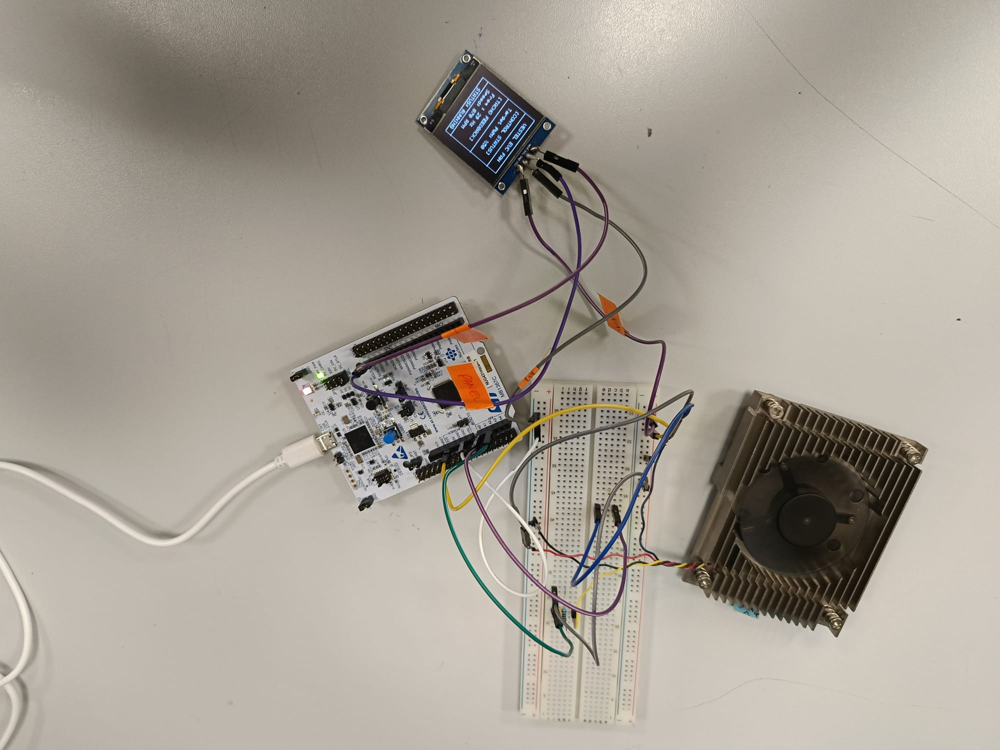
01 / EMBEDDED
STM32G4 PWM Fan Monitor
Hardware PWM actuation with timer input capture, tachometer feedback, RPM calculation and SH1107 OLED telemetry.
View repository ↗I build hardware-oriented systems across embedded firmware, PCB design, power electronics, control and robotics — with an emphasis on measurable engineering evidence.
4th-Year Electrical & Electronics Engineering Student at Abdullah Gül University (Expected Graduation: June 2027) — Open to Spring 2027 Long-Term Engineering Internships (Embedded Systems & Hardware Design)
4th-year Electrical & Electronics Engineering student at Abdullah Gül University (expected graduation: June 2027), focused on embedded hardware, power electronics, PCB design and signal integrity. My work spans STM32 firmware, peripheral integration, real-time sensor acquisition, converter design, oscilloscope-based validation and autonomous systems.
My portfolio spans embedded systems, analog electronics, digital design, PCB/power, electromagnetics, robotics and climate tech. Use the filters to explore each area.

Hardware PWM actuation with timer input capture, tachometer feedback, RPM calculation and SH1107 OLED telemetry.
View repository ↗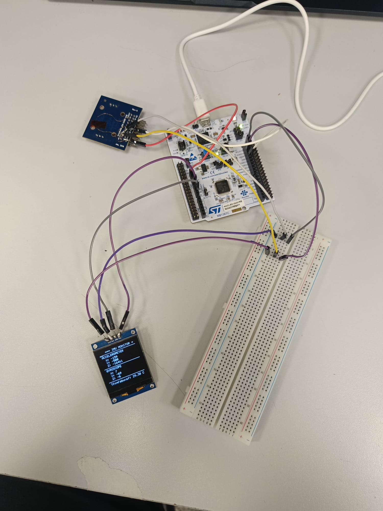
Register-level SPI communication, burst sensor acquisition and real-time OLED visualization.
View repository ↗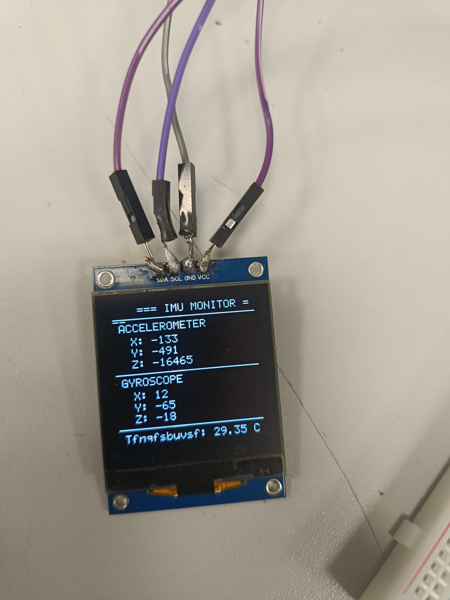
14-byte burst acquisition, accelerometer/gyroscope processing, moving-average filtering and OLED telemetry.
View repository ↗Framebuffer-based 128×128 monochrome display driver with pixel, line and rectangle primitives for STM32G4.
View repository ↗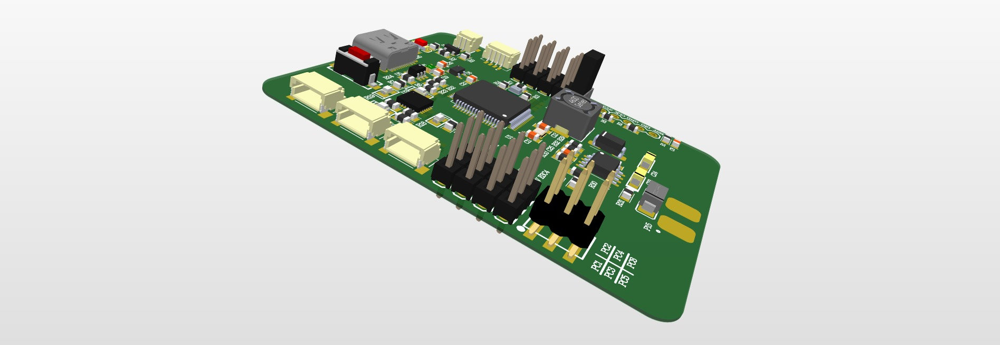
Custom flight-controller hardware built around the STM32F405RGT6, integrating an MPU-9250 IMU, BMP280 barometer, external SPI memory, USB-C and expansion I/O. Multi-sheet schematic, custom Altium libraries and PCB layout developed as an end-to-end hardware design project.
View repository ↗ONGOING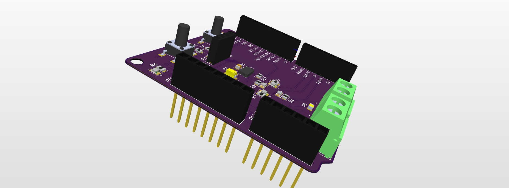
Shield-style I²C sensing and monitoring PCB integrating an ADXL345 3-axis accelerometer and LTC2990 voltage, current and temperature monitor, with external interfaces, custom libraries and two-layer PCB layout.
View repository ↗ONGOINGCompact 45 × 45 mm, 4-layer hardware platform designed in Altium Designer for JLCPCB PCBA assembly. Built around the STM32F405RGT6 with ADXL345 motion sensing, SHT31 temperature/humidity sensing and nRF24L01+ / MDBT42 wireless connectivity, plus on-board LiPo management: MAX17048 fuel gauge, MCP73831 charger and TPS22918 load switch.
45 × 45 mm · 4 layersCustom multi-rail power distribution board (PDB) designed with the GÖKTAŞ Team for the TEKNOFEST Çelikkubbe Air Defense Systems Competition. Supplies motors, microcontrollers, sensors and laser subsystems, with protection, grounding, thermal and current-carrying constraints.
ONGOING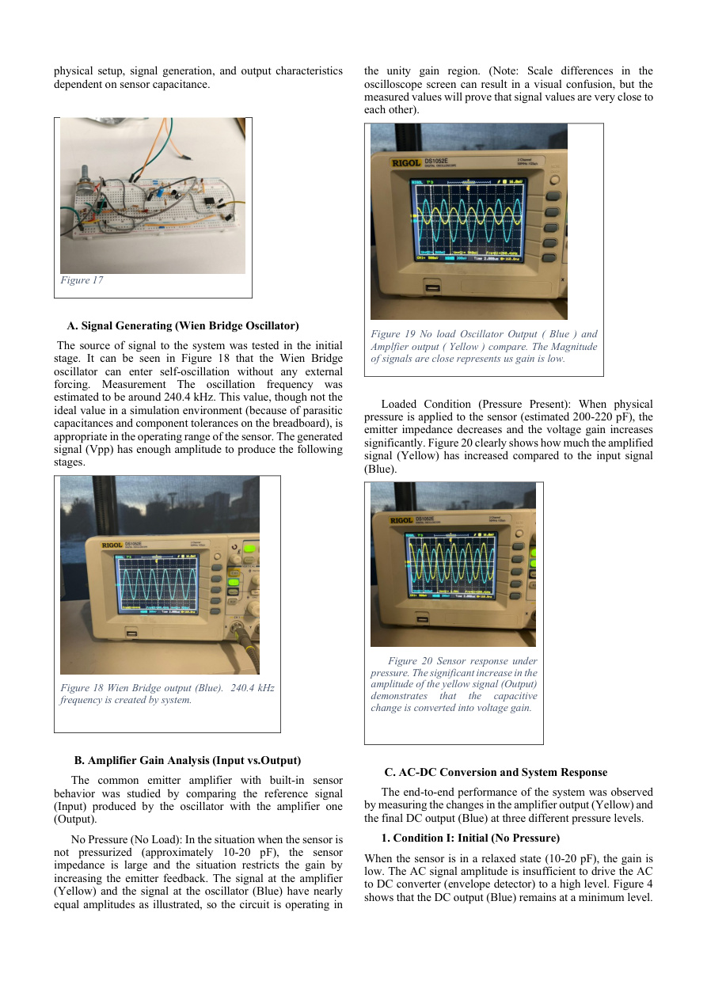
Fully analog capacitance-to-voltage chain using a Wien Bridge oscillator, sensor-dependent common-emitter gain stage and Schottky envelope detector, validated in LTspice and on the bench.
30–200 pF → 0.328–1.11 V DC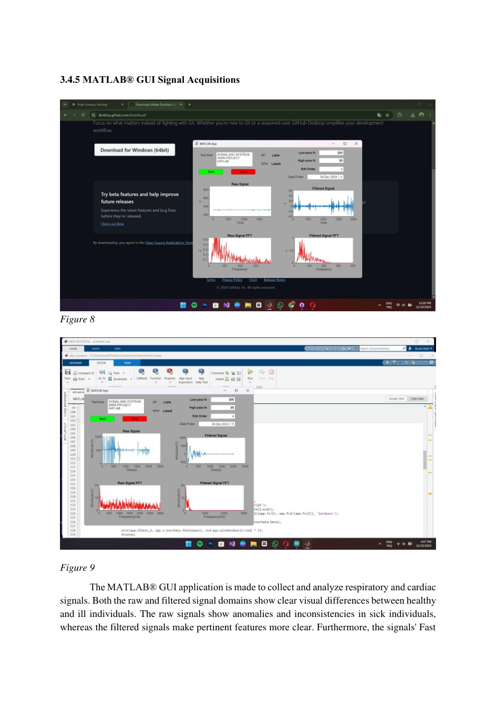
TL072-based heart/lung analog filtering with Arduino acquisition and a MATLAB App Designer interface for real-time raw/filtered waveform and FFT analysis.
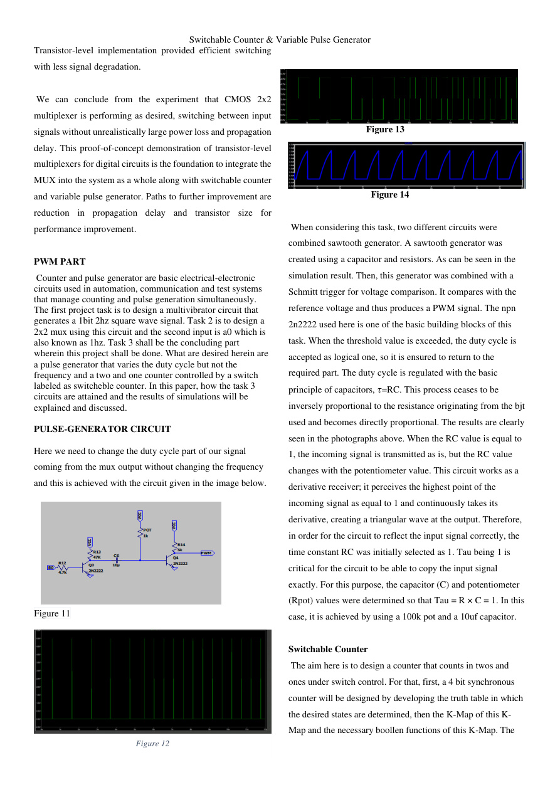
CMOS transistor-level multiplexing, 74HC74 sequential logic, switchable BCD counting and variable-duty pulse generation verified with SPICE simulations.
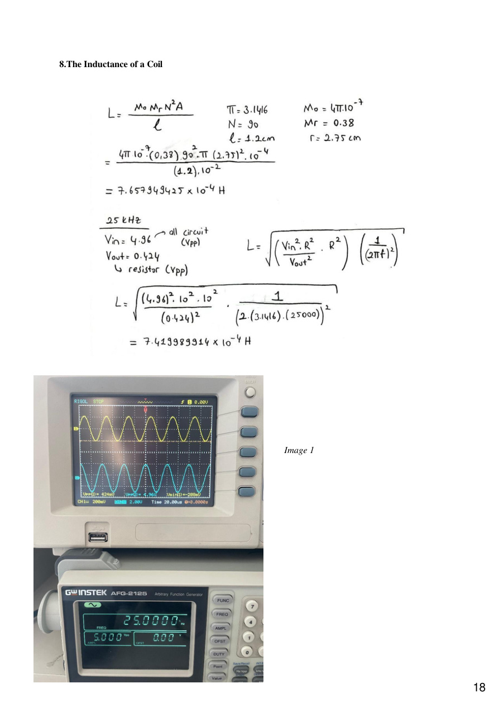
Magnetic-field derivation and homogeneity analysis, d/R optimization, inductance estimation, LTspice modelling and oscilloscope/function-generator validation.
Senior Design Project. Wireless control and motor-driver hardware architecture for an autonomous forklift AGV: ESP-NOW link between an ESP32-S3 and an ESP32 DevKitC V4, FreeRTOS queues for command handling, Logitech F710 wireless control, CRL 4001B encoders for wheel feedback and BTS7960B 40 A motor drivers. The autonomy layer builds on A* global planning, Dynamic Window Approach, PID speed control and LiDAR–odometry integration.
ONGOING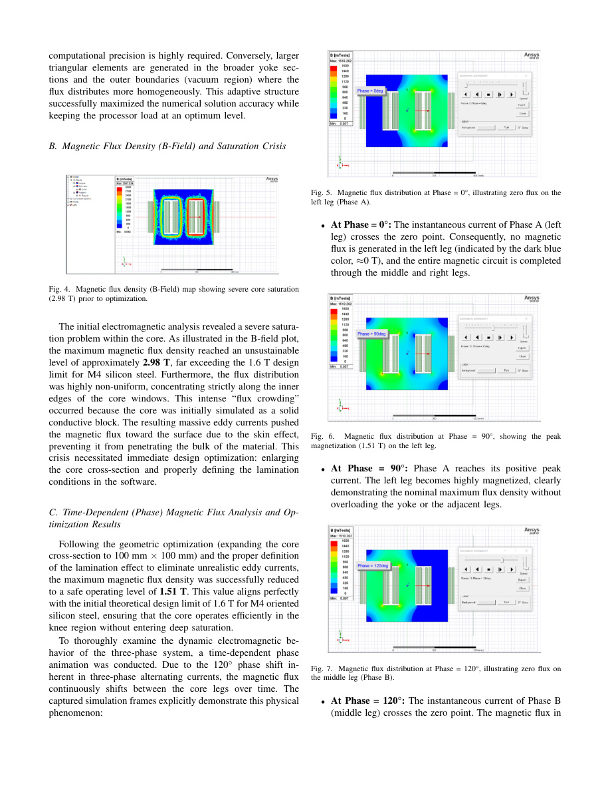
Designed and optimized a 10 kV / 400 V, 20 kVA three-phase transformer in Ansys Maxwell 2D. Core saturation was reduced from 2.98 T to a safe 1.51 T through geometry and lamination optimization, followed by equivalent-circuit extraction and efficiency analysis.
Peak efficiency: 97.21% at 50% load, PF = 1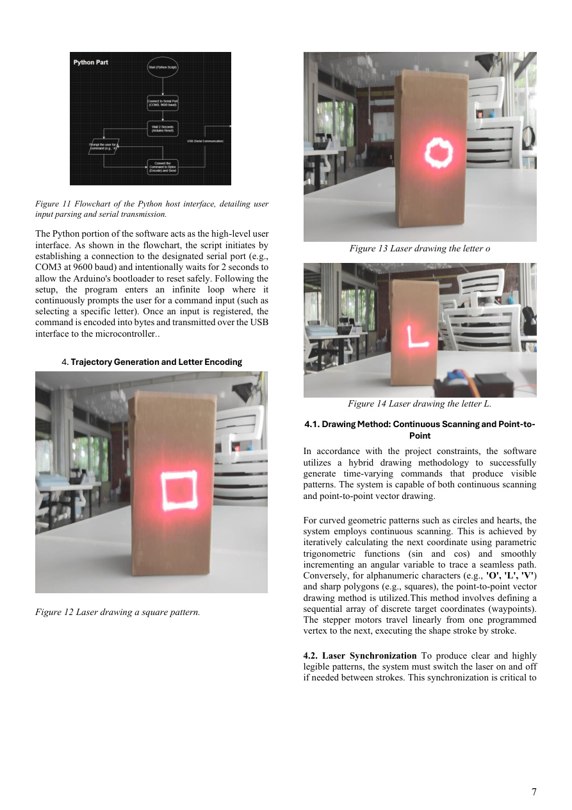
Low-cost X–Y laser scanning platform combining two 28BYJ-48 stepper motors, ULN2003 drivers, Arduino control, Python serial commands, non-blocking trajectory generation and custom 3D-printed optomechanical mounts.
Physical projection of square, O, L and vector trajectoriesClimate-technology hackathon project focused on carbon-footprint and energy analysis, developed at the T3 Vakfı COP31 Climate Technologies Creathon in Antalya.
🥉 3rd Place — COP31 Climate Technologies Creathon · Nov 2026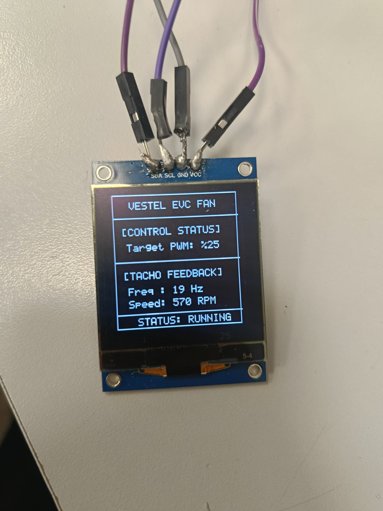
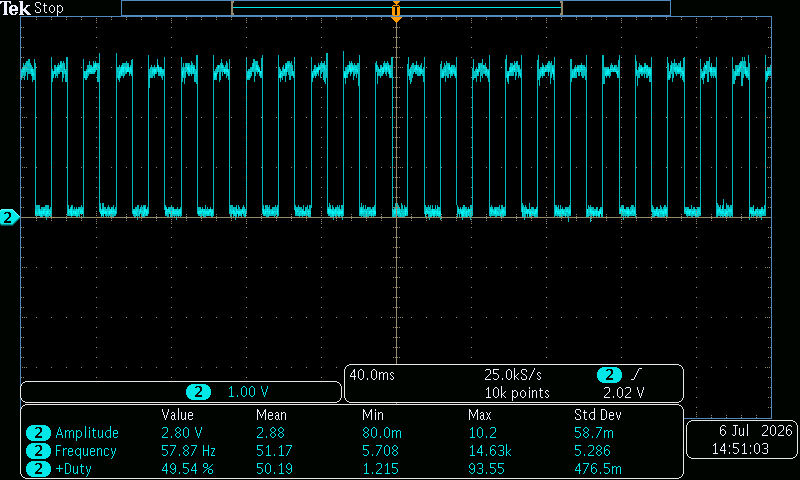
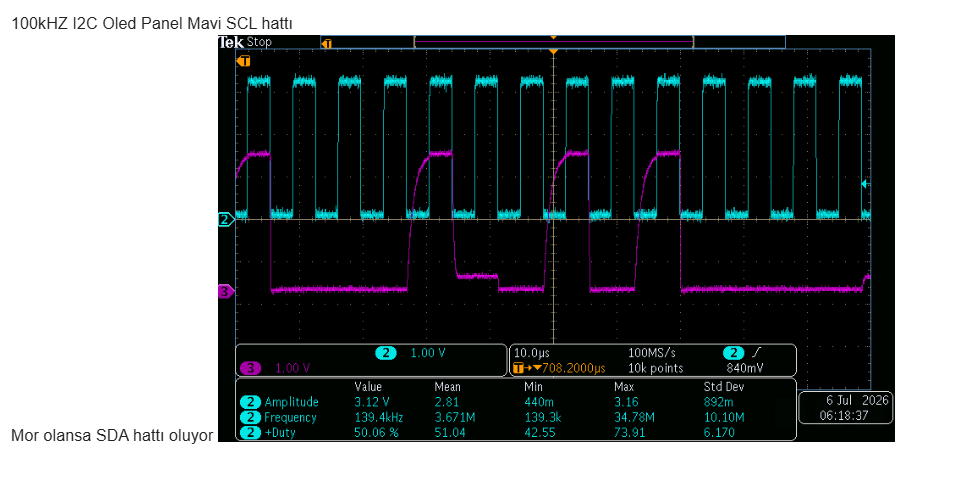
Won first place with the custom 4-layer STM32F405 flight controller PCB, which was also selected as an official reference design.
Third place with Karbon Pusula, a climate-technology project focused on carbon-footprint and energy analysis.
Designed the custom power distribution board (PDB) for the team's air defense system.
Worked across STM32 peripheral integration, SH1107 display development, ICM-20601 I²C/SPI integration, power-management blocks, oscilloscope validation, EMI investigation and high-speed PCB design practices.
Developed BMI323 IMU firmware across STM32, Arduino and nRF52 platforms, including register-level I²C/SPI, interrupt-driven motion detection, BLE telemetry and SD-card logging.
C · C++ · FreeRTOS · STM32F405 · STM32G431RB · ESP32-S3 / ESP32 · ATmega328P · nRF52 · Raspberry Pi Zero W
I²C · SPI · UART · BLE · ESP-NOW · PWM · ADC · Timers · Interrupts
Buck Converters · LDOs · MOSFET Gate Driving · Op-Amps · BJTs · Filters
Altium Designer · Controlled Impedance · Differential Pairs · Length Matching · Crosstalk · EMI/EMC
STM32CubeIDE · LTspice · MATLAB · Oscilloscope · Signal Generator · Near-Field Probe · Git
Open to Spring 2027 long-term engineering internships in embedded systems and hardware design, as well as PCB, control and robotics opportunities.